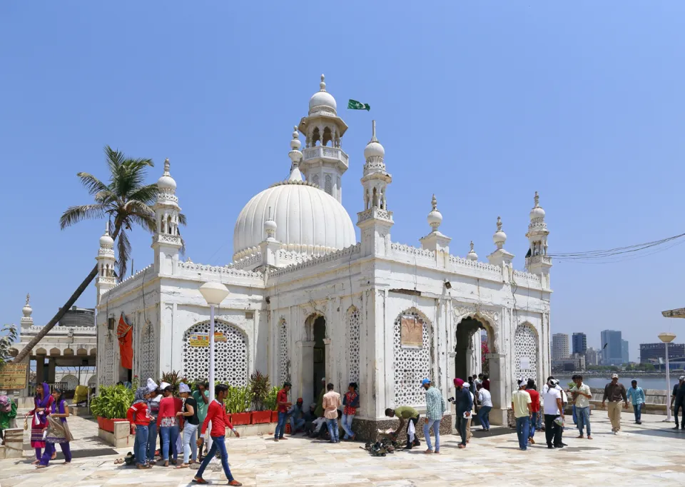

Haji Ali Dargah
Haji Ali Dargah is one of the most iconic religious places in Mumbai, located on an islet off the coast of Worli. This Indo-Islamic architectural wonder attracts thousands of visitors daily from all faiths.
History
Built in 1431, the dargah contains the tomb of Sayed Peer Haji Ali Shah Bukhari. According to legends, Haji Ali died during his pilgrimage to Mecca and his casket miraculously floated back to this spot in Mumbai.
Architecture
The structure showcases brilliant Indo-Islamic architecture, featuring intricate marble pillars, mirrors, and colorful glass work. The 85-foot-high minaret adds to its magnificent appearance. The dargah is connected to the mainland by a narrow causeway, which gets submerged during high tide.